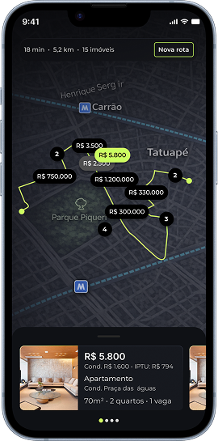

Aplicativo criado para transformar a forma como pessoas encontram, anunciam e se conectam a imóveis de forma simples, visual e inteligente.
O iRuas nasce para ir além da busca tradicional, propondo novas formas de descobrir imóveis por meio de experiências mais visuais, interativas e conectadas. Em vez de depender exclusivamente de filtros e listas, o aplicativo amplia as possibilidades de descoberta ao integrar diferentes formas de navegação e interação.
A proposta é transformar a jornada em algo mais fluido e exploratório, permitindo que o usuário encontre oportunidades não apenas pelo que procura diretamente, mas também pelo que descobre ao longo do caminho. Essa abordagem valoriza o contexto, o comportamento e o momento do usuário, tornando a experiência mais natural e relevante.
O aplicativo organiza essa complexidade em uma interface simples e intuitiva, conectando conteúdo, localização e interação em um fluxo contínuo. Dessa forma, o iRuas cria uma experiência mais dinâmica, aproximando pessoas e imóveis de maneira mais eficiente e significativa.
Descubra imóveis de forma leve e intuitiva. Cada gesto aproxima o usuário das melhores escolhas, tornando a jornada mais dinâmica, visual e envolvente.

Navegue por imóveis de forma visual e intuitiva.
Descubra imóveis no mundo real. Aponte a câmera para um prédio e veja, na hora, se existem imóveis disponíveis naquele local. Uma forma simples e intuitiva de transformar a busca em uma experiência mais rápida, visual e conectada com o seu entorno.


Explore imóveis ao longo do seu caminho.
O modo rotas transforma seus trajetos em oportunidades de descoberta.
Ao definir um destino, o aplicativo apresenta imóveis disponíveis ao
longo do percurso, conectando deslocamento e exploração em uma
experiência contínua. Com base na localização e no contexto da rota, o
usuário encontra opções relevantes sem precisar interromper sua
jornada, tornando a busca mais fluida, prática e integrada ao dia a
dia.

Defina a rota

Imóveis na rota

Imóvel em destaque
